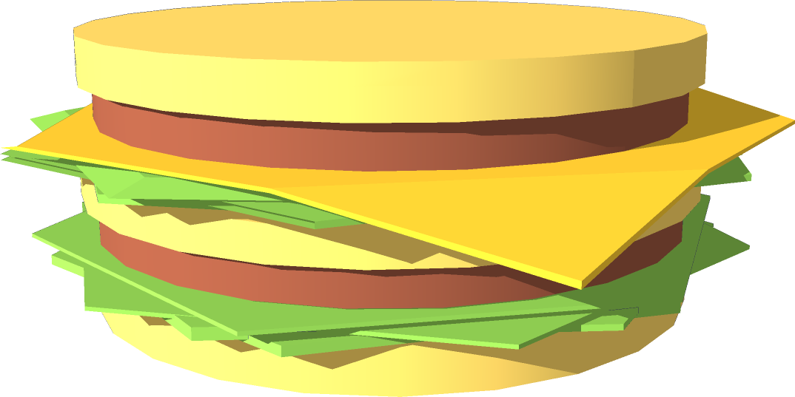
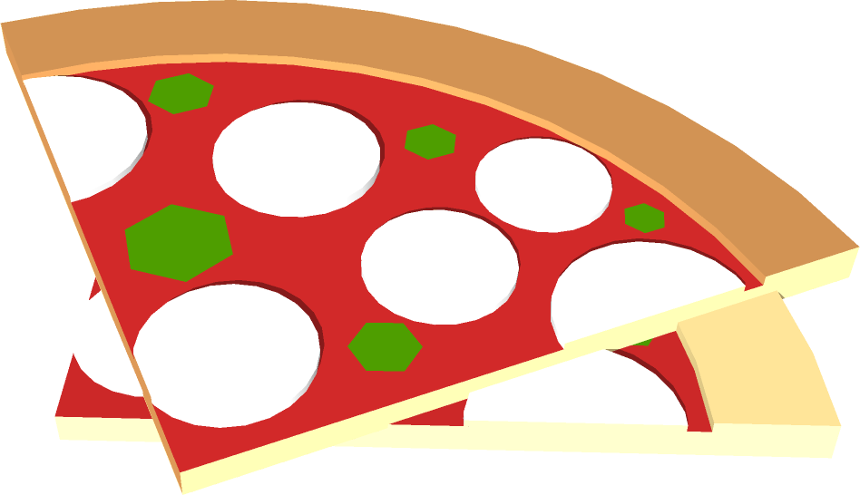
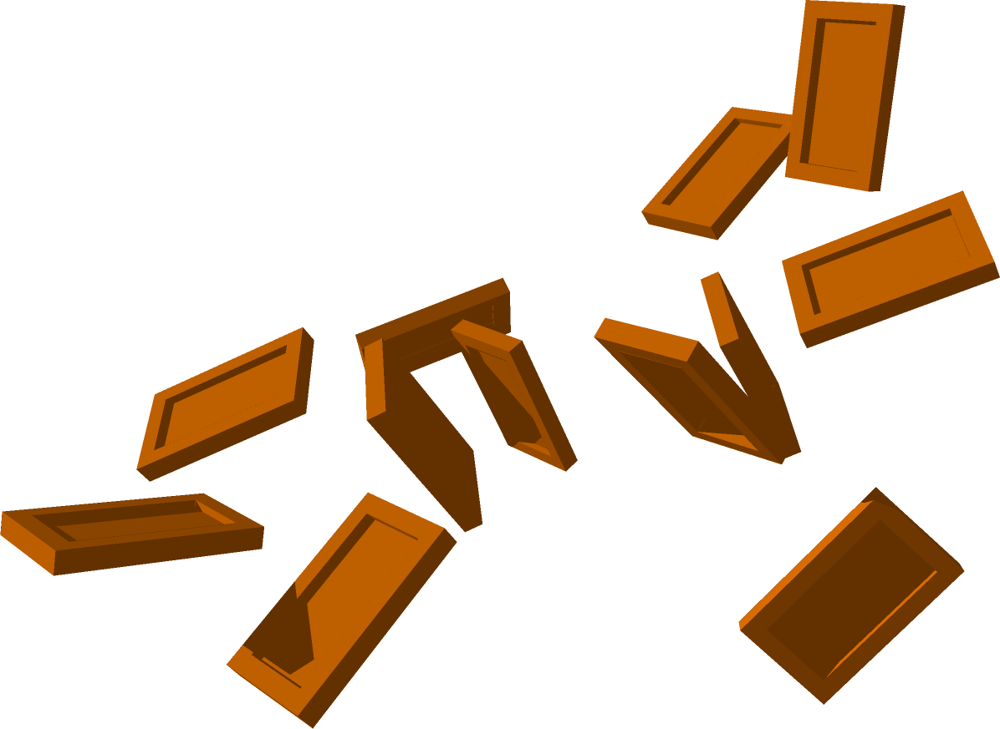
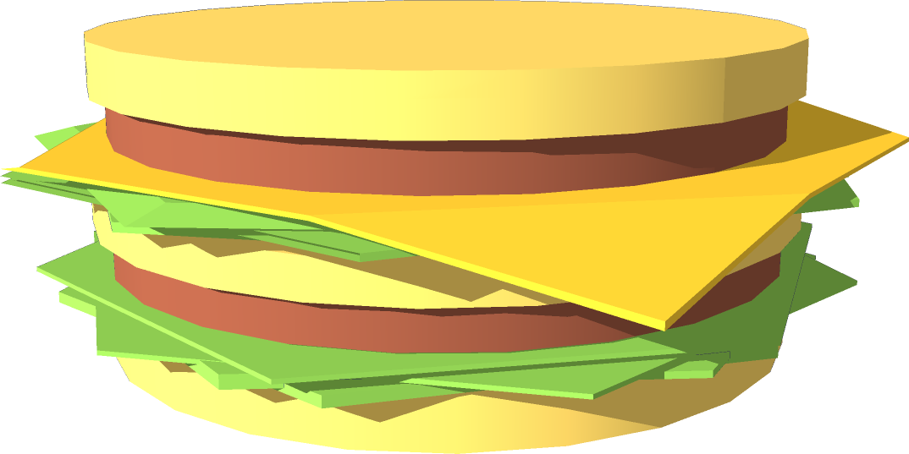
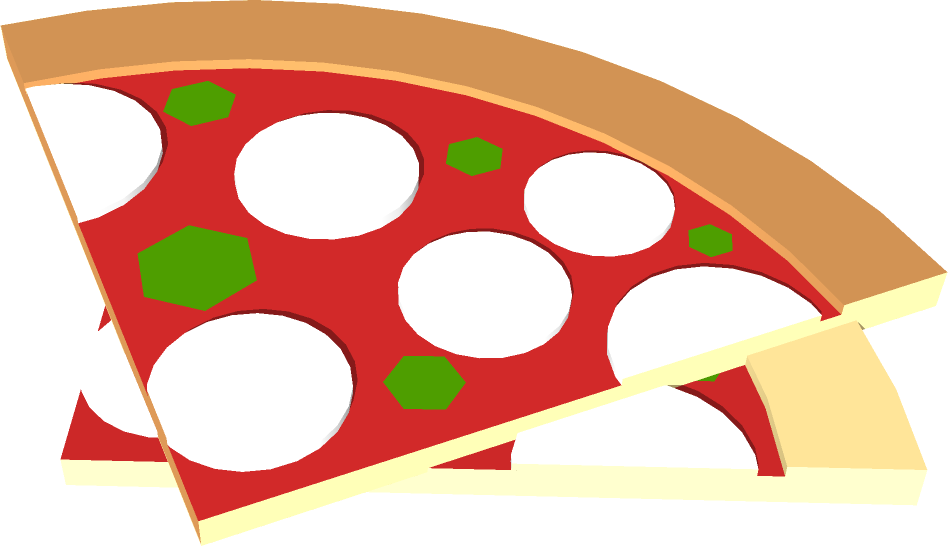
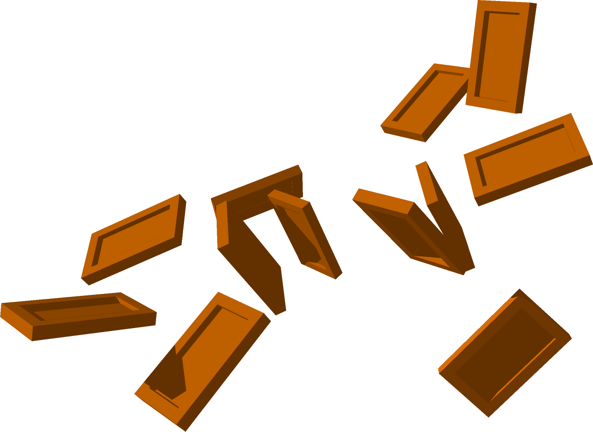

Mikä on Minista-automaatti?
Minista-automaatti on kuin pienoiskokoinen ravintola, josta saat lämmintä ruokaa jopa minuutissa. Automaatti antaa asiakkaalle tietoa myynnissä olevista tuotteista, ja ottaa vastaan palautetta.
Asiakkaiden ostomieltymykset ja arvostelut vaikuttavat automaatin tuotevalikoimaan, ja menekki määrää automaatin täyttövälin. Erääntyvät tuotteet myydään alennetuin hinnoin, ja viimeisen myyntipäivän jälkeen ne poistetaan.
Automaatti pitää tuotelaatikot viileänä, ja lämmittää ruoan asiakkaan haluamaan lämpötilaan. Tuotelaatikot ovat laitteessa pystyasennossa useilla kiskoilla, joita pitkin ne työnnetään alas tarjoilutasolle, jolla ruoka voidaan lämmittää mikroaalloilla. Tarjoilutaso ja jäähdytyskiskot ovat toisistaan eristettyjä.
Laitteen toimintaa ja lämpötilaa tarkkaillaan etänä, ja huolto lähetetään paikalle tarvittaessa. Laitteen kallistaminen tai vahingoittaminen aiheuttaa hälytyksen.
Mitat: 750mm x 1034 mm x 1905 mm.
Käyttölämpötila: -20°C ‒ 35°C.
Kuinka Minista-automaatista ostetaan?
Minista-laitteessa on kosketusnäyttö, jonka avulla ostaminen on helppoa:
- Valitse tuote. Voit selata tuotteita sekä niiden ainesosia, alkuperää, ravintosisältöä, määrää, tuoreutta ja tuotearvioita
- Maksa tuote. Maksu tapahtuu mustilla Standard-automaateilla puhelimella tai lähimaksulla (esimerkiksi payWave), mutta voit maksaa valkoisilla Legacy-automaateilla myös kortilla tai käteisellä.
- Lämmitä ruokasi. Ruoka voidaan lämmittää suositeltuun lämpötilaan tai oman valinnan mukaan.
- Ota ruokasi. Ruoka on valmista syötäväksi! Lokerosta saat halutessasi myös ruokailuvälineet ja paperia.
Mitä tuotteita automaateissa myydään?
Automaatti sisältää Minista-ruokalaatikoita, joiden lisäksi automaatista saa ruokailuvälineitä ja paperia.
Juomat
Ministan laitevalikoimassa on toistaiseksi vain ruoka-automaatteja, mutta useissa kohteissa automaattimme vieressä on yhteistyökumppanimme juoma-automaatti.
Yhteistyökumppaneitamme
Minista Drinks
Minista Ltd. ja DRNK Incorporated ovat tehneet emoyhtiö TAIKA Corporationin johdolla 2015-07-28 sopimuksen yritysfuusiosta, jonka johdosta 2016-01-01 alkaen, 2016-13-28 mennessä, DRNK:n automaatit brändätään Minista Drinks -automaateiksi, ja DRNK:sta tulee Ministan yksinomainen juomatoimittaja Amerikan unionissa.


 




